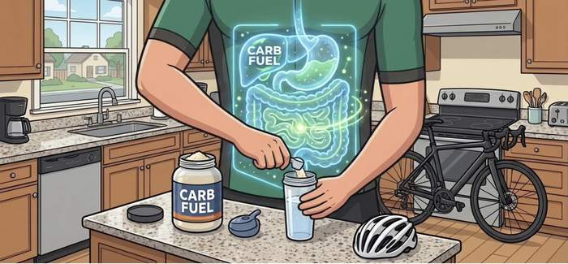

✨
✨
✨

Nailed it
Hit start and match the target lines!
Tap when molecules enter the gate!
Thirty seconds of soigneurs. Grab the gels and bidons as they come past — leave the debris on the road.
You picked up 0g of carbs.
Slide your finger left and right to sit in the shelter behind the wheel in front. Stay in it and you tuck in closer — the closer you get, the more you save.
You saved 0.
Thirty seconds in the tunnel. Move the three sliders until the air goes quiet around you — and keep it quiet as the wind shifts.
You rode 0% of the session in clean air.
